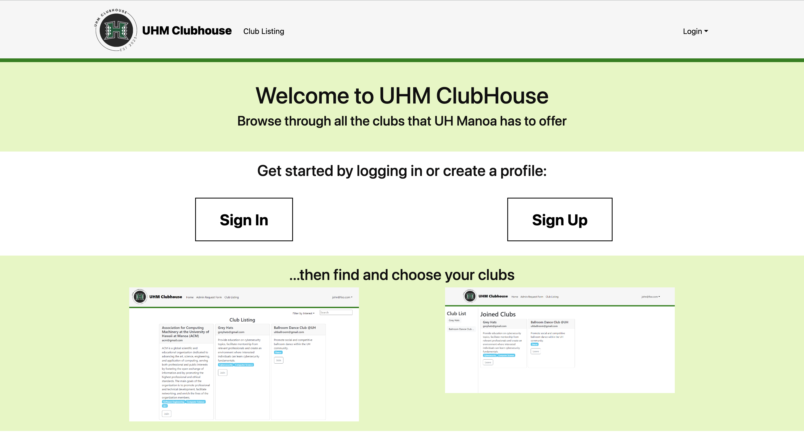
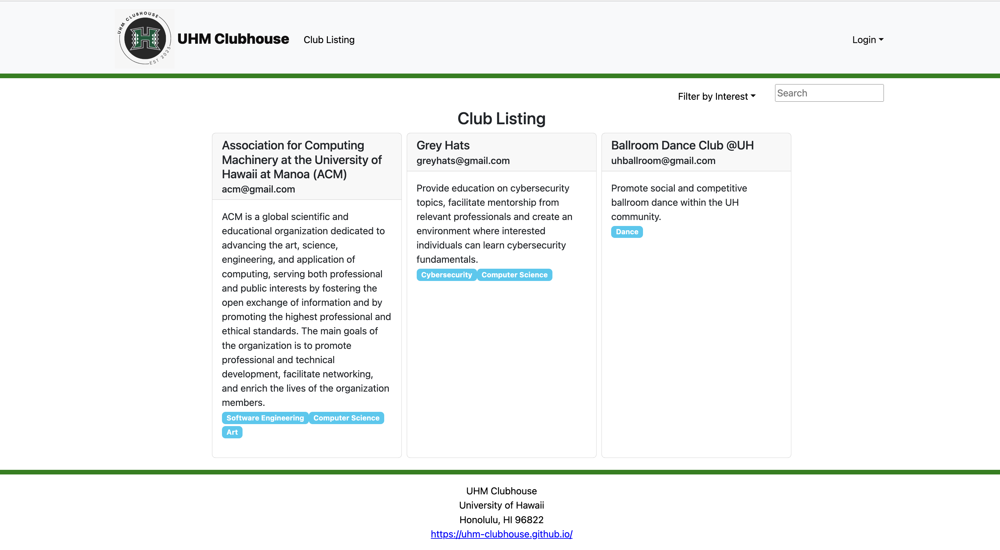
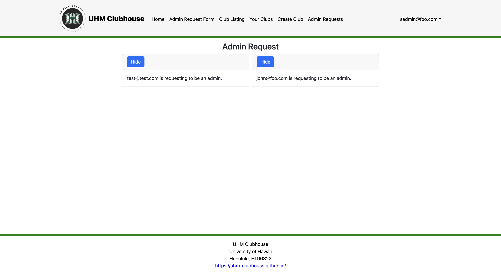

The UHM Clubhouse is a website created by a group of six members using the knowledge and skills developed throughout ICS 314 while practicing agile project management. Our project home page that details the web application can be found here.The purpose of the website is for students to browse an organized directory of all current student clubs available at UH Manoa. Each club consists of a brief description such as meeting information, contact information, and related interests.
On the website, users can sign in or create an account to view, join, or leave clubs. Users can also request to be an admin, who can create, delete, and edit clubs. Additionally, the application consists of an additional role called the “super admin,” who is authorized to view and accept admin requests.
The team consisted of six members: Keiko, Iverson, Lizyl, Chad, Delsin, and myself. By practicing agile project management, our tasks were organized and equally divided. We mainly worked off of the GitHub organization, specifically through project boards, which organized our tasks for Milestones 1, 2, and 3 and issues that corresponded to each task. I enjoyed using the project board for each milestone because it helped me understand who was working on what and allowed for collaboration and cooperation.
My contributions to the project are spread throughout the application. For example, I worked on creating the “Club Listing” page and implementing a filter and search function that can also be seen on the “Your Clubs” page. The filter function allows users to filter the clubs by interest and the search function allows users to browse clubs by keyword(s).

Another contribution was the Create Club page, where I primarily worked on the backend to make sure the data was written to MongoDB when a form was submitted.
I also helped with the “Admin Requests” page to display all the emails that were requested to be made an admin and implemented a “hide” feature to temporarily remove the card.

Additionally, I tested all of the pages and features on each page to ensure it is functional for all roles, using TestCafe.
Overall, I enjoyed working with others to brainstorm, exchange ideas, debug, and code together to create a fully functional web application. Although it is not my first time working in a team and using an organizational tool such as the GitHub organization and project boards, I was able to further develop my skills as a software engineer. In terms of soft skills, I learned how to take initiative, lead my team by leveraging my strengths, and effectively communicate with others. Software engineering is not all about good programming skills, after all. However, I was also able to challenge myself by using Javascript, React, Meteor, and MongoDB to implement features and functions I had never experienced before, such as the filter and search functions. Through this experience, I learned the importance of efficient web searching and the appropriate usage of Artificial Intelligence to aid in developing software.